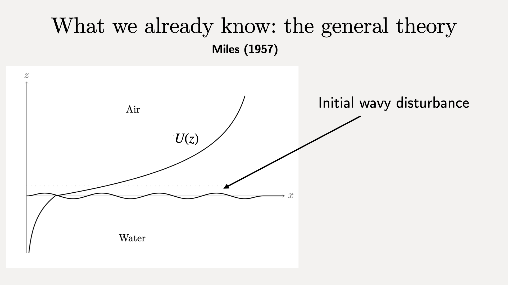
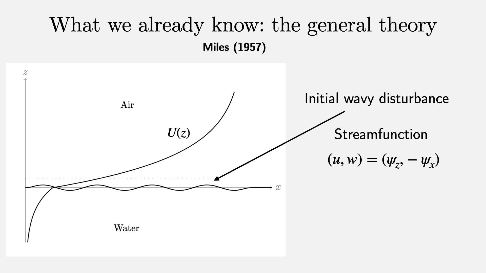
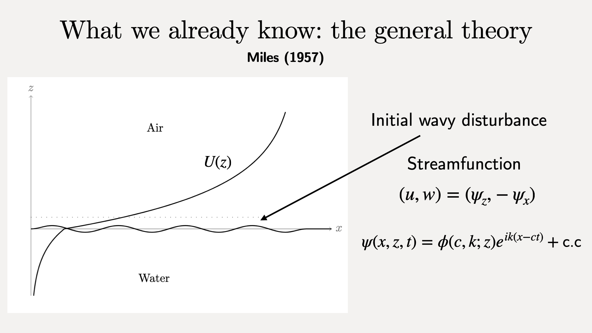
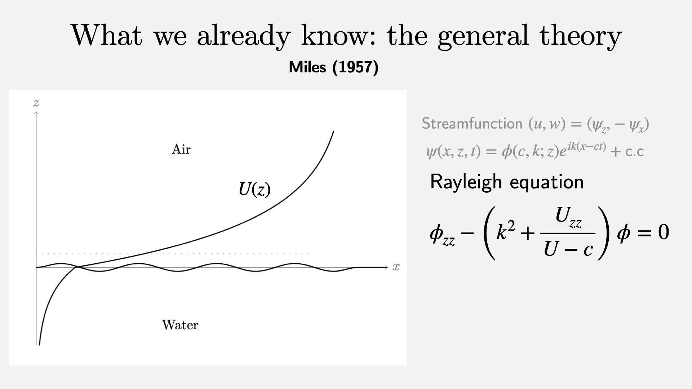
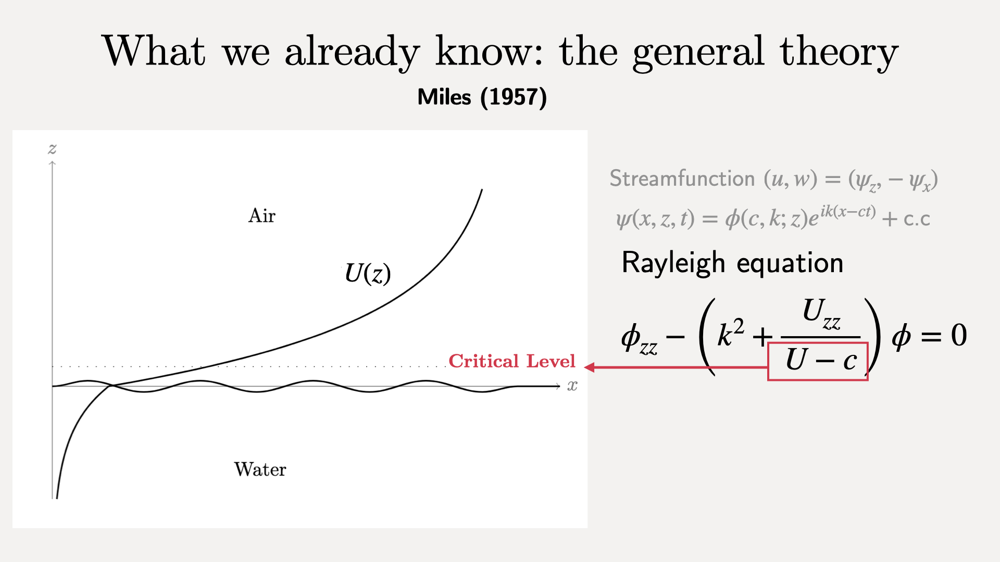
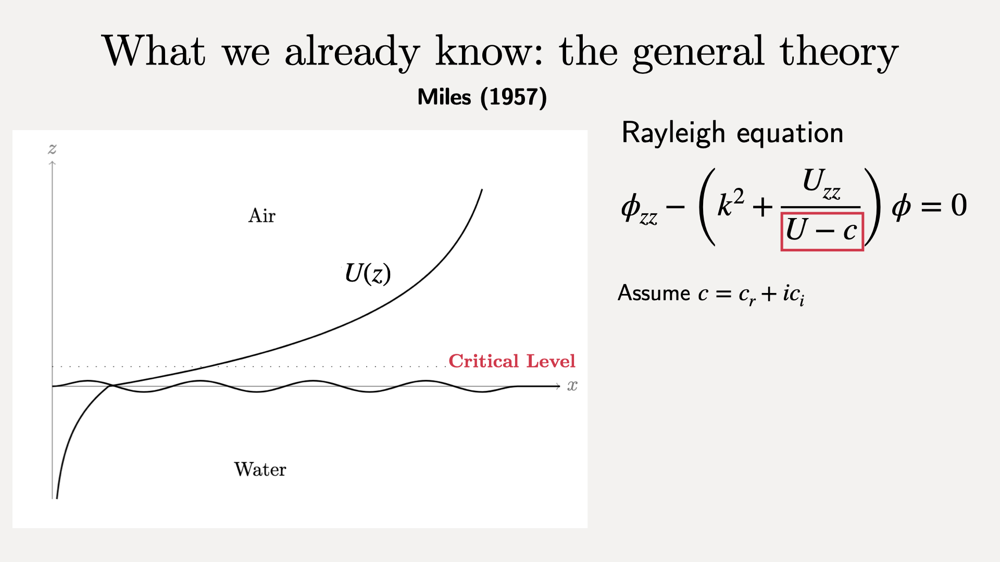
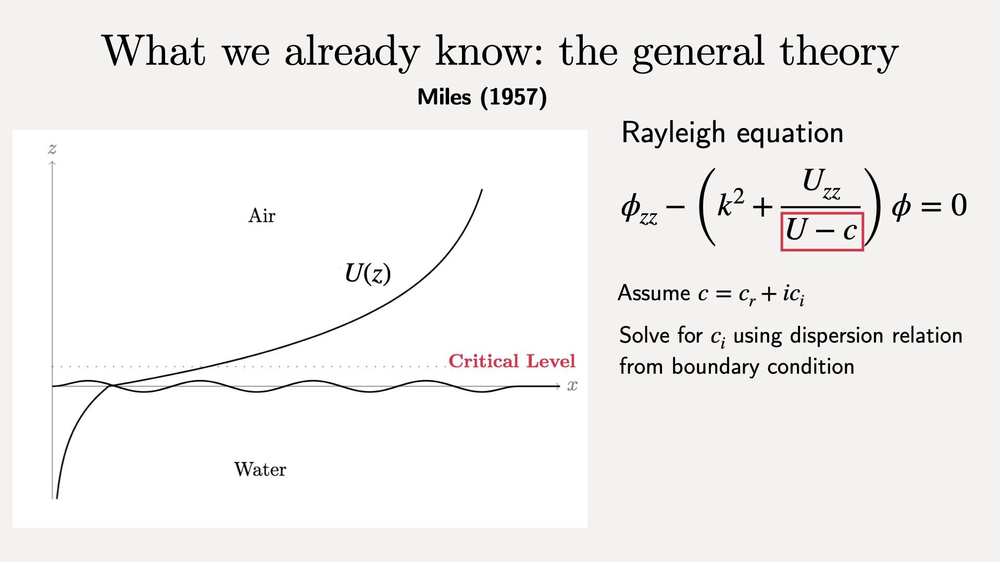

The general theory for the generation of waves by wind is due to Miles (1957).
We consider a two-dimensional domain with air above water, and a sheared background velocity profile $U(z)$.

We consider what happens when there is an initial sinusoidal perturbation to the flat sea state.


Assume normal mode solutions.

Obtain the Rayleigh equation for the amplitude.

There is a singularity at the critical level, $z_c: U(z_c)=c$.

To avoid an unphysical singularity, let the phase speed $c$ have small imaginary part.

$c_i$ gives the growth rate of the initial perturbation (i.e., of waves).